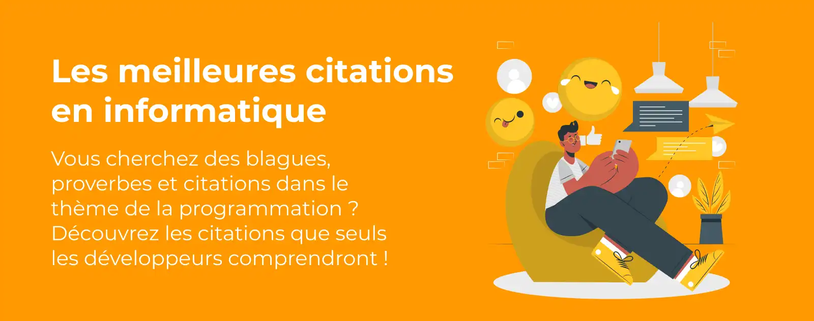
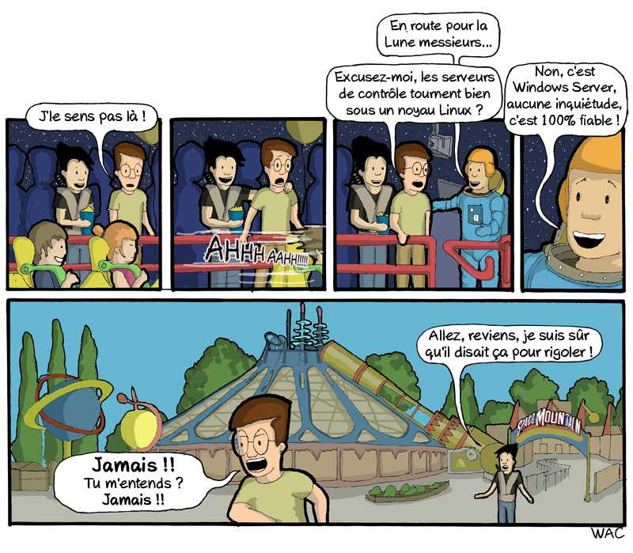
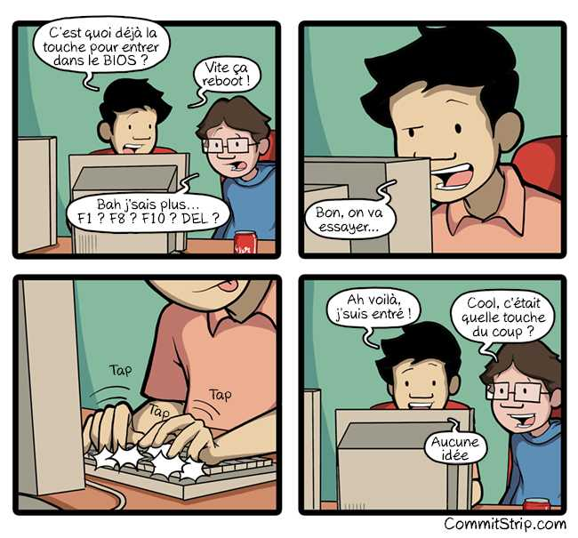
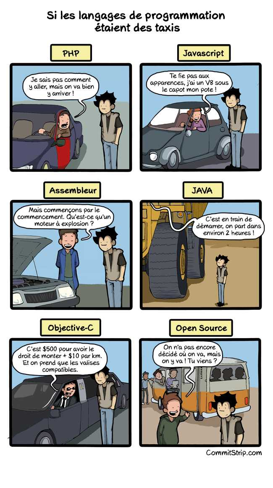

« Les ordinateurs sont rapides ; les programmeurs les gardent lents. »
Humour de programmeurProjet personnel · HTML et CSS
Un peu d’humour
dans le code.
Des citations et des bandes dessinées sur la programmation, les langages et la vie des développeurs.
Voir les citations
Une pause entre deux lignes de code
Des thèmes simples à parcourir
Choisis un thème dans le menu, puis découvre quelques phrases et images qui parlent du quotidien en informatique.
01
Le métier
Dans la tête d’un programmeur
« Un code supprimé est un code débogué. »
Parfois, la solution est plus simple qu’on pense.« Ça fonctionne sur ma machine. »
Une phrase bien connue des développeurs.« Algorithme : un mot utilisé quand on ne veut pas expliquer ce qu’on a fait. »
Une définition un peu taquine.« Combien de programmeurs faut-il pour changer une ampoule ? Aucun, c’est un problème de matériel. »
Quand le code n’est pas en cause !« Il n’y a pas de code plus rapide que l’absence de code. »
Moins de code, parfois moins de problèmes.02
Les outils
Les langages ont leur caractère

« Question : Qu’a dit le code Java au code C ? Réponse : Vous n’avez pas de classe. »
Une des blagues de ta liste sur les langages.« Une requête SQL entre dans un bar, s’approche de deux tables et demande : “Puis-je me joindre à vous ?” »
Un jeu de mots pour les amateurs de bases de données.« En C, nous devions coder nos propres bugs. En C++, nous pouvons en hériter. »
Un clin d’œil à la programmation orientée objet.« Il y a 10 sortes de personnes : celles qui connaissent le binaire et celles qui ne le connaissent pas. »
En binaire, 10 signifie deux.« Toc, toc… Qui est là ? … longue pause… Java. »
Une blague de développeur qui prend son temps.03
Les systèmes
Quand l’ordinateur fait des siennes

« Défaillance du clavier. Appuyez sur F1 pour continuer. »
Mais comment appuyer sur F1 ?« Il n’y a pas d’endroit aussi bien que 127.0.0.1. »
127.0.0.1, c’est l’adresse de son propre ordinateur.« UNIX est simple. Il faut juste un génie pour comprendre sa simplicité. »
Une simplicité parfois mystérieuse.04
Les souvenirs
Petites scènes de la vie geek


Merci pour la visite